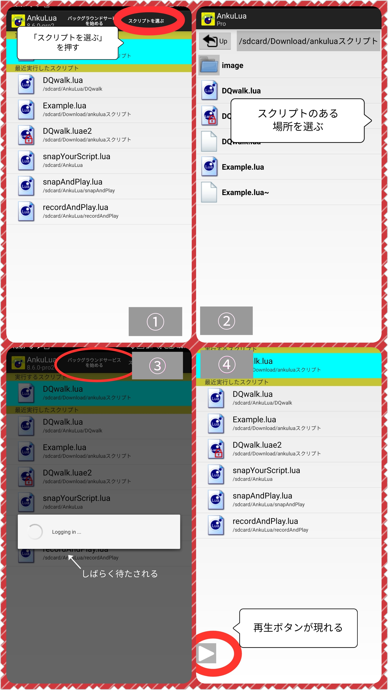
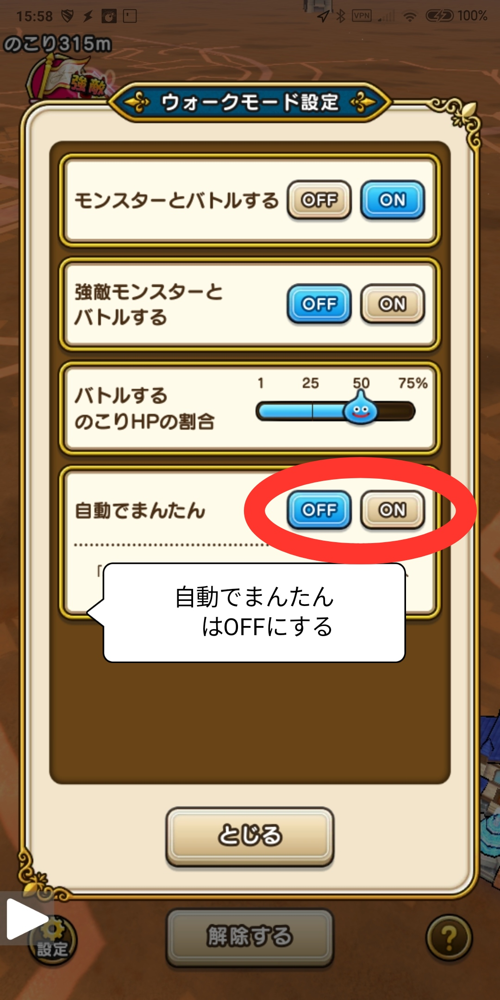
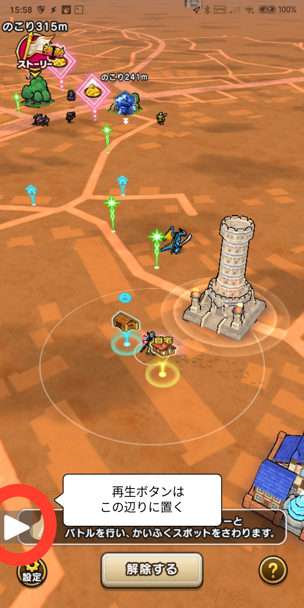

何ができるのか
- 主に自宅や職場にいるとき使うスクリプトです。
- 少し離れた敵をタップして近づいてくるようにします。
- 移動していないときwalkモードではHPの回復を行ってくれないので、HPが少ないのを検知して「じゅんび」→「まんたん」→「じゅもんで」で体力を回復します。
利用方法
- まず最初にユーザ登録のために機種IDを送って頂きます。機種IDをコピペするankuluaのスクリプトをお送りします。そのスクリプトを実行するだけでクリップボードに機種IDがコピーされるので、メールなどにペーストして送って下さい。こちらでユーザ登録をしたドラクエウォークのスクリプトをお送りします。
- ankuluaを起動し、スクリプトを選択したあと、バックグラウンドでサービスを開始します。すると再生ボタンが画面に現れます。

- 再生ボタンを押すと、ankuluaで選んでおいたスクリプトが実行されます。
- 実行する前にドラクエウォークは「walkモード」にして「画面は一番ズームアウトした状態」にして下さい。その状態でないと正しく画像が認識できません。
- walkモードでは「自動でまんたん」はOFFにして下さい。「ピンチ」や「瀕死」をスクリプトが判定するので、競合してしまい誤動作してしまいます。

- ankuluaの再生ボタンは、下の画像のように「walkモード中」の下の吹き出し枠の左側くらいの位置に置いて下さい。他の場所だとスクリプトのタップ動作で押されてしまうことがあります。

- 動作している様子をキャプチャしたかったのですが、ankuluaとスクリーンレコーダの同時動作ができないようで録画できませんでした。
お試しスクリプト
- Androidスマホは様々な解像度の機種があるため、まず動作確認したい方がほとんどだと思います。そこでご連絡頂ければ1週間ほど無料で使用できるお試しスクリプトをお渡しします。
- お試しスクリプトが動作しなかった場合、動作するように対応しますがご協力頂くことがあるかもしれませんのでご理解お願い致します。